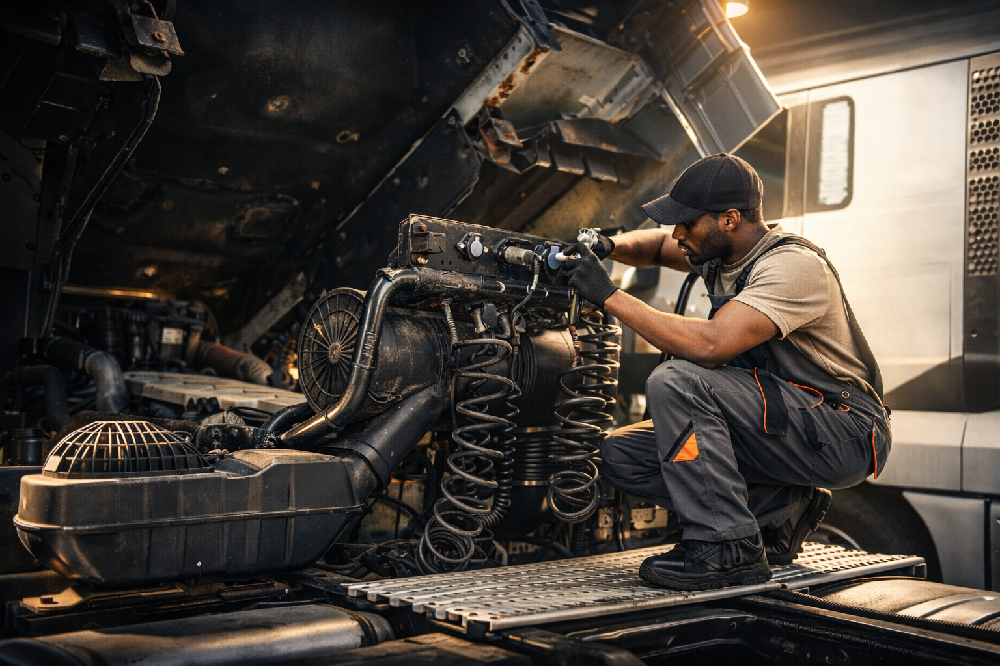
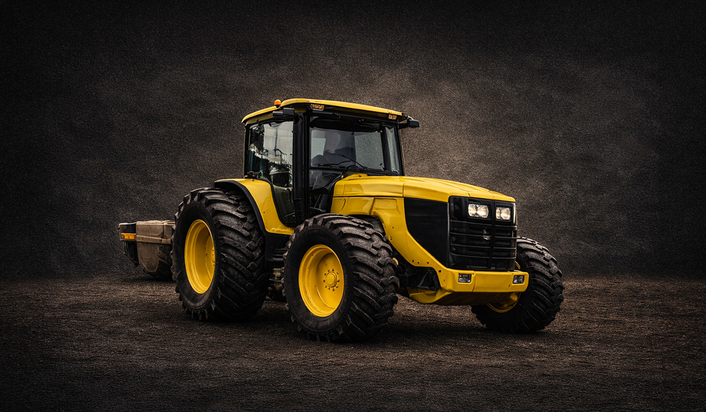
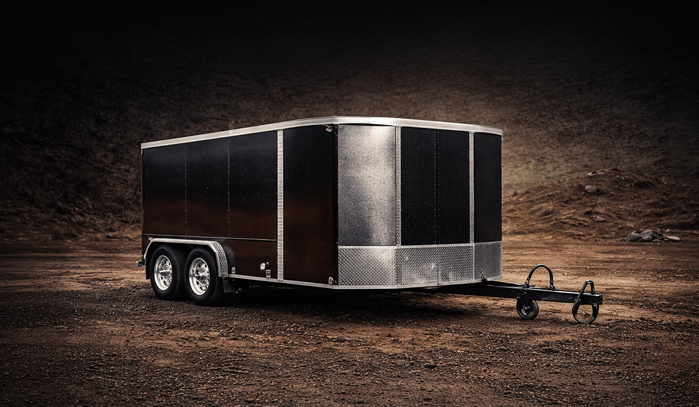
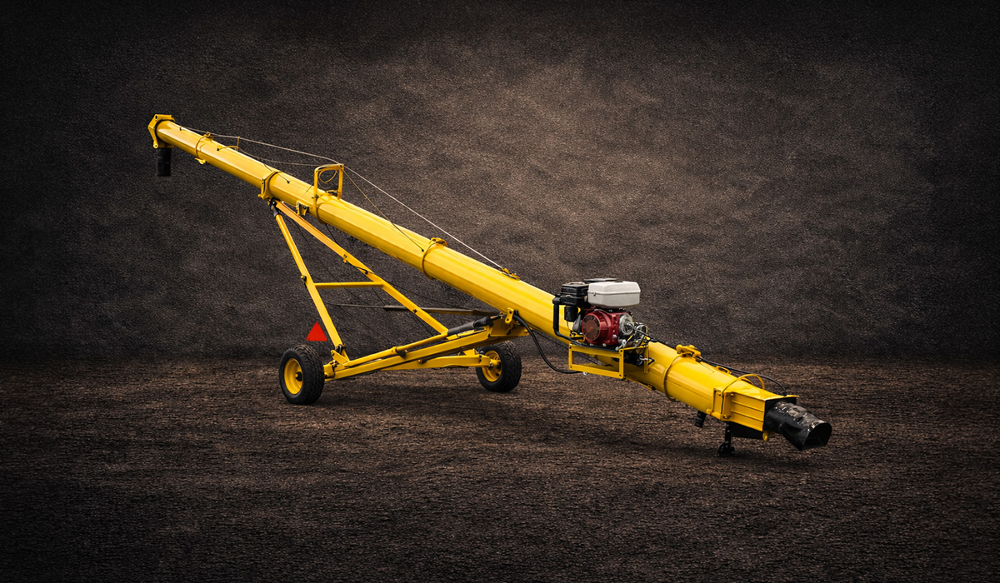
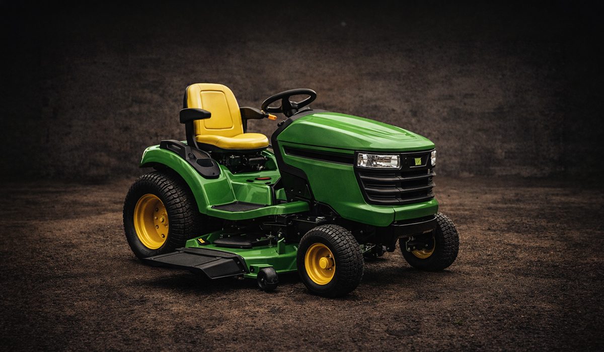
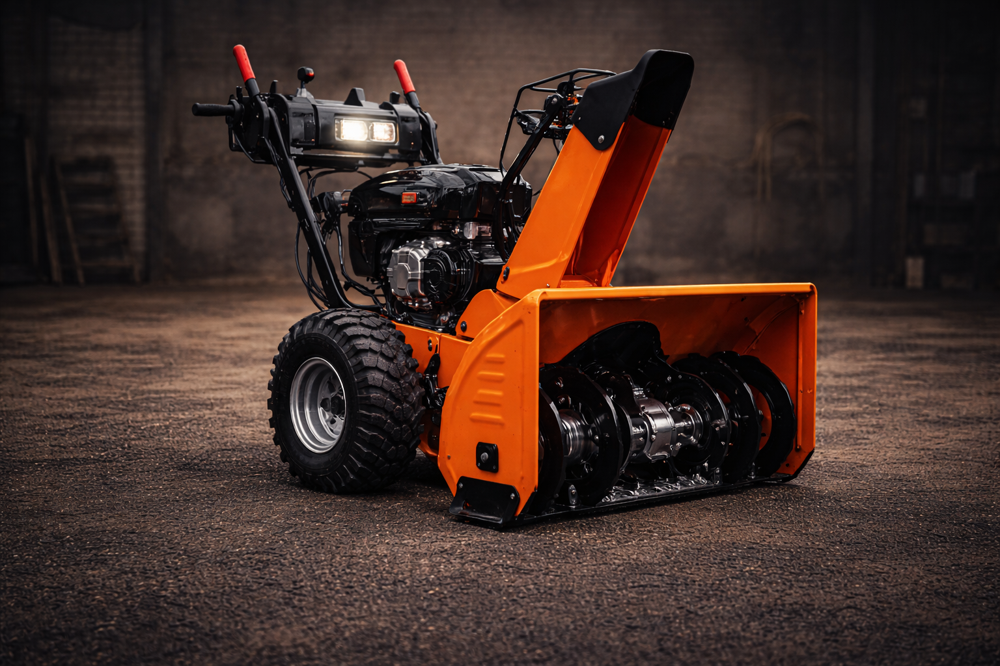

Weeping Water, Nebraska Repair Shop
Country Kindness. Honest Prices. Big-City Expertise.
Diesel, Auto &
Equipment Repair
From diesel trucks and semis to trailers, tractors, heavy equipment, hydraulics, welding, and small engines, we handle the repair work that keeps southeast Nebraska moving.
Based in Weeping Water, we bring a country approach to service with straightforward pricing and skilled repair work you can count on.
Our Services
We Work on More Than Cars
Integrity Diesel handles the everyday repairs, the work-truck problems, and the equipment jobs people around this area actually need fixed.





Need a mechanic in Weeping Water, NE that can handle more than basic car work? Integrity Diesel works on diesel trucks, semis, trailers, tractors, skid loaders, excavators, dozers, hydraulic systems, farm equipment, small engines, and welding or fabrication jobs for customers across southeast Nebraska. We keep things simple: country kindness, honest prices, and skilled repair work that gets the job done right.

Country kindness, honest prices, and dependable diesel, auto, trailer, tractor, and equipment repair for Weeping Water and the nearby Nebraska communities that rely on one good shop.
About Integrity Diesel
Country Values. Skilled Repair. Work Done Right.
Repair work for southeast Nebraska.
Integrity Diesel Truck & Auto Repair is based in Weeping Water, Nebraska and serves customers who need dependable mechanical work on the vehicles and equipment they use every day. Whether it is a diesel truck, semi, trailer, tractor, skid loader, excavator, dozer, hydraulic component, farm machine, small engine, or personal vehicle, the goal stays simple: treat people right, charge fair prices, fix the problem correctly, and get you moving again.
- Country kindness with a strong local approach.
- Honest prices without the big-city overhead.
- Big-city expertise on diesel, auto, trailers, tractors, hydraulics, heavy equipment, and more.
Need Reliable Mechanical Repairs? Call Us Today
Country Kindness • Honest Prices • Big-City Expertise
(402) 800-8321- Diesel Trucks
- Semi Trucks
- Trailers
- Tractors
- Skid Loaders
- Excavators
- Dozers
- Small Engines
Serving: Weeping Water • Papillion • Bellevue • Gretna • Plattsmouth • Lincoln • Nebraska City • Louisville
Areas We Serve
Built Around Weeping Water and Nearby Communities
The shop is based in Weeping Water, but many customers come in from nearby southeast Nebraska towns that need a dependable place for mechanical repair.
Integrity Diesel Truck & Auto Repair is based in Weeping Water, Nebraska and serves customers throughout the surrounding region. We help drivers, equipment owners, farmers, contractors, and working families with repair for diesel trucks, personal vehicles, semis, trailers, tractors, skid loaders, excavators, dozers, hydraulic repair, farm equipment, welding and fabrication, and small engines. If you are searching for diesel repair in Weeping Water, trailer repair near Papillion, tractor repair near Plattsmouth, equipment repair near Lincoln, hydraulic repair in southeast Nebraska, or welding and fabrication nearby, this shop is built for that kind of work.
Frequently Asked Questions
Repair Questions We Hear All the Time
What do you work on?
Integrity Diesel Truck & Auto Repair works on diesel trucks, semis, trailers, tractors, skid loaders, excavators, dozers, hydraulic systems, farm equipment, small engines, cars, motorcycles, boats, and also offers welding and fabrication. If it has a motor and needs work, give us a call.
Are you based in Weeping Water?
Yes. The shop is based in Weeping Water, Nebraska and serves customers from nearby communities including Papillion, Bellevue, Gretna, Plattsmouth, Lincoln, Nebraska City, Louisville, and surrounding southeast Nebraska areas.
Do you work on both personal vehicles and work equipment?
Yes. That includes personal vehicles, diesel trucks, semis, trailers, tractors, skid loaders, excavators, dozers, farm equipment, hydraulic-related equipment, and many kinds of small engine machines.
Why choose Integrity Diesel?
Because you get country kindness, honest prices, and big-city expertise all in one place. The goal is simple: treat people right, charge fairly, and do quality repair work you can rely on.
How do I request service?
You can call (402) 800-8321 or fill out the form below with your name, city, repair type, and a short description of what needs fixed.
Contact Us
Get in Touch With Integrity Diesel
Need help with a diesel truck, semi, trailer, tractor, skid loader, excavator, dozer, personal vehicle, farm machine, hydraulic component, welding job, or small engine? Fill out the form and let us know what you need repaired.
Weeping Water, Nebraska
Serving Papillion, Bellevue, Gretna, Plattsmouth, Lincoln, Nebraska City, Louisville & surrounding areas
Request a Quote
Tell us what needs fixed and we’ll get back to you.